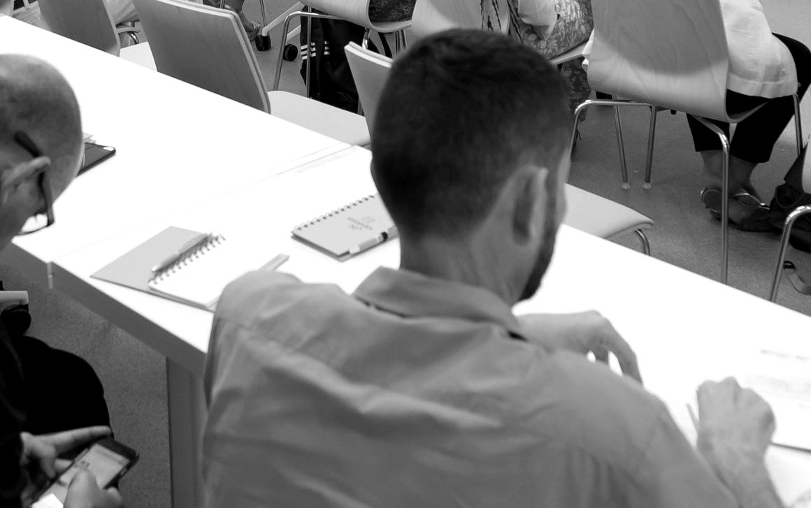
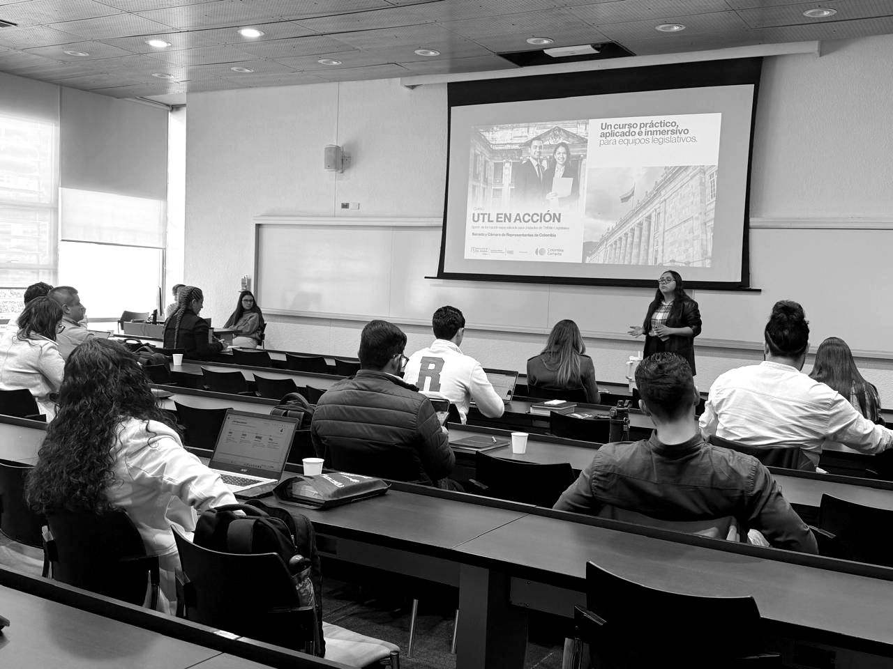
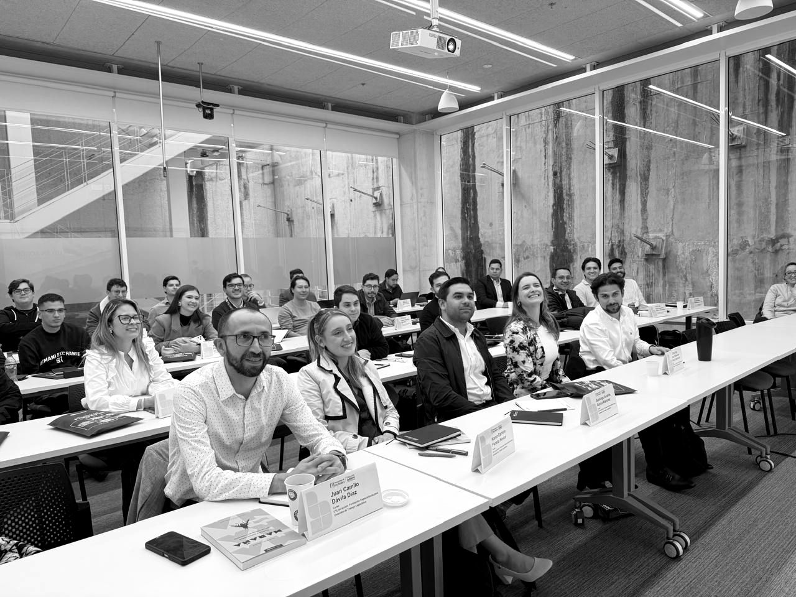
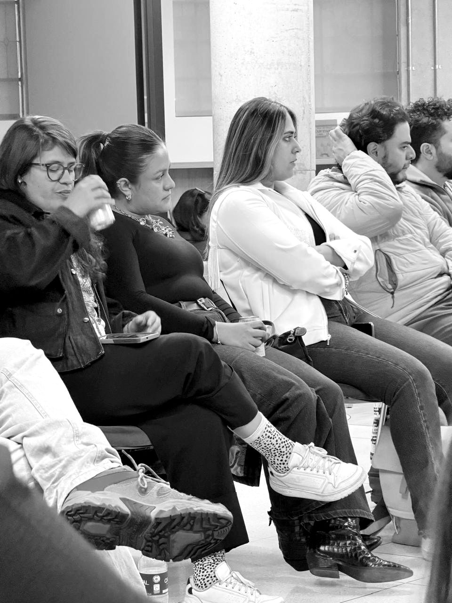
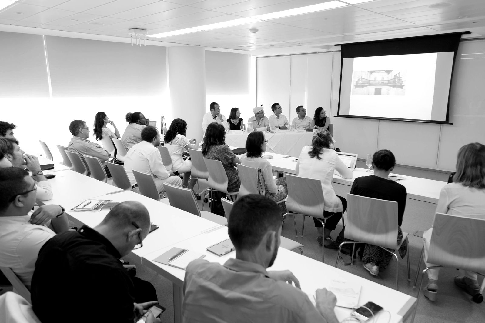
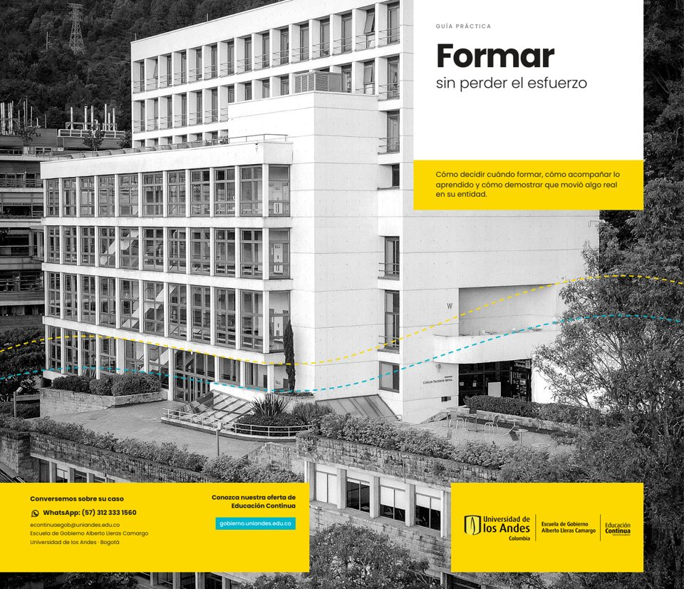

La solicitud llega resuelta
Nadie le pide diagnosticar un problema. Le piden «un curso de servicio al ciudadano». La causa ya fue decidida por otro, con la única herramienta que tenía a la mano.
Guía práctica para decidir cuándo una organización necesita formación, en qué debe formar y cómo saber si esa formación está moviendo algo real.
Para entidades públicas, empresas, cooperación internacional y organizaciones sociales.
Si alguna vez le tocó defender el presupuesto de capacitación sin datos con qué respaldarlo, lo que sigue le va a sonar.
Le piden el informe de formación del año. Tiene las cifras listas: horas dictadas, personas capacitadas, ejecución del plan, satisfacción de 4,6 sobre 5. Y alguien pregunta, sin mala intención: «¿y esto en qué nos cambió la operación?».
Usted sabe que algunos programas sí movieron cosas. Lo ha visto. Pero no tiene cómo demostrarlo.
Si esto le suena, no es un problema de su gestión. Es un problema de diseño del sistema, y le pasa a la mayoría de las organizaciones que forman.
Nadie le pide diagnosticar un problema. Le piden «un curso de servicio al ciudadano». La causa ya fue decidida por otro, con la única herramienta que tenía a la mano.
4,5 o más, programa tras programa. Y aun así nada cambia en el puesto de trabajo. La satisfacción con el relator no predice la aplicación.
Firma la inscripción y ahí termina su participación. Cuando la persona capacitada vuelve, nadie le pide aplicar nada y la operación la absorbe en 48 horas. Sin un plan de acción inmediato, el esfuerzo se pierde.
Hay profesionales con veinte años de oficio a quienes nadie les pide su criterio. Sin un rol de mentor, esa experiencia no se transfiere: se jubila con ellos. Y quien acaba de formarse reaprende por ensayo y error lo que alguien, a dos escritorios, ya resolvió.
Se formó, aprendió, mejoró el proceso. Y renunció en marzo. Lo que sabía no estaba en ningún procedimiento: estaba en su criterio y en su bandeja de correo.
Deslice la gráfica horizontalmente
Dos de las cuatro fugas ocurren antes del curso y dos después. Por eso acompañamos las tres etapas.
Ver cómoLa mayoría de los proveedores entra en un solo punto: dictar el curso. Desde la Escuela de Gobierno Alberto Lleras Camargo acompañamos el proceso completo, antes, durante y después, con el rigor de la Universidad de los Andes y la experiencia de quienes conocen el sector desde adentro.

Le ayudamos a plantear bien el proceso antes de invertir en él.
Previene las fugas 1 y 2

Programas con calidad académica, pensados para aplicarse el lunes.
Educación Continua · EdCo
Le ayudamos a demostrar qué cambió y a que no se pierda.
Cierra las fugas 3 y 4
Puede empezar por cualquiera de las tres etapas. Conversemos sobre dónde está hoy su entidad.
La formación produce aprendizaje individual. Lo que lo convierte en capacidad es que el saber quede disponible para quien llega después. La pregunta que ordena el trabajo es incómoda y concreta: ¿qué conocimiento crítico desaparecería si mañana se van tres personas?
El área que diseña el desarrollo de toda la entidad suele ser la última en tener un plan propio.

Al equipo de talento humano se le pide hoy que diagnostique problemas de desempeño, discuta con evidencia ante un comité, lea indicadores y decida qué programa se cierra. Son competencias técnicas, no actitudes, y casi nunca aparecen en el plan de capacitación, porque quien lo redacta rara vez se incluye a sí mismo.
Convertir «necesitamos un curso de…» en un problema de desempeño bien planteado, sin dañar la relación con el área que lo pidió.
Objetivos observables, práctica en vez de contenido y rúbricas para calificar un entregable real del trabajo.
Línea base, grupo de comparación y un reporte que un comité directivo pueda usar para decidir.
Identificar el saber crítico, montar mentoría y sostener documentación que la gente consulte de verdad.
Lograr que un jefe de área sostenga una conducta cuando su equipo no le reporta a usted.
Decidir qué se cierra, qué se contrata y cómo especificar un contrato por resultados y no por horas.
Lo que esta guía propone para la entidad aplica, primero, al equipo que la lidera. Hablemos de cómo fortalecerlo.


Formación con expertos practitioners · Escuela de Gobierno
Responda pensando en cómo funcionan las cosas en la práctica, no en cómo están escritas. Nada de lo que responda sale de esta página.
Su lectura aparece aquí. Conteste las siete preguntas y verá en qué estado está su entidad, el siguiente movimiento y en qué etapa podemos acompañarle.
Ya casi. Su lectura aparecerá aquí mismo en cuanto responda las siete preguntas.
Hoy el sistema responde por ejecución: horas, cupos, cumplimiento del plan. Es el punto donde está la mayoría, y no es una falla de gestión: es lo que el sistema pide. El costo aparece cuando alguien pregunta qué cambió.
El siguiente movimientoEscoja un solo programa visible y, antes de diseñar nada, pregúntele a quien lo patrocina: «si esto funciona, ¿qué estaría viendo usted dentro de un año que hoy no ve?». Esa respuesta escrita es su primera línea base.
Le acompañamos a levantar necesidades, estructurar el plan de formación y fijar la línea base antes de invertir en un nuevo programa.
Ya hay evaluación, pero mide lo que ocurre dentro del aula: satisfacción y, a veces, conocimiento. Los resultados se archivan y rara vez cambian una decisión.
El siguiente movimientoCambie la encuesta de cierre —pregunte por relevancia y por el apoyo que necesitará del jefe— y haga que cada participante vuelva con una tarea concreta para aplicar en los primeros 30 días.
Le ayudamos a definir las conductas críticas de sus programas y a rediseñarlos para que sean prácticos, aplicables y medibles desde el inicio.
El sistema ya sale del aula: hay conductas definidas, el jefe aparece en el proceso y se mide algo después. Aquí aparece la primera evidencia incómoda, y por primera vez hay con qué decidir.
El siguiente movimientoConecte las conductas con un indicador que la entidad ya produzca, con su línea base, y formalice la mentoría: convierta en rol reconocido a quien todos consultan de manera informal.
Le acompañamos a montar el monitoreo de impacto, a documentar casos de éxito y fracaso y a diseñar un esquema de mentoría interna.
El sistema está construido: los programas nacen con un resultado y una línea base, y el portafolio se decide con evidencia. El reto ahora es sostener el rigor y que lo aprendido no se evapore con la rotación.
El siguiente movimientoMire dos frentes: qué saber crítico desaparecería si se van tres personas, y el desarrollo técnico de su propio equipo, que a esta altura suele ser el cuello de botella.
Le acompañamos en gestión del conocimiento y en el diseño de una universidad corporativa o academia interna que sostenga lo construido.
Los cuatro estados describen la madurez del sistema de formación, no la calidad del trabajo de quien lo lidera.

Para quien quiera ir más a fondo: el método completo.
PDF · 10 páginas · Uso libre con atribución
Antes, durante o después: le ayudamos a plantear el proceso, a formar con rigor y a demostrar el impacto. Escríbanos y coordinamos un espacio para entender su caso, sin compromiso.